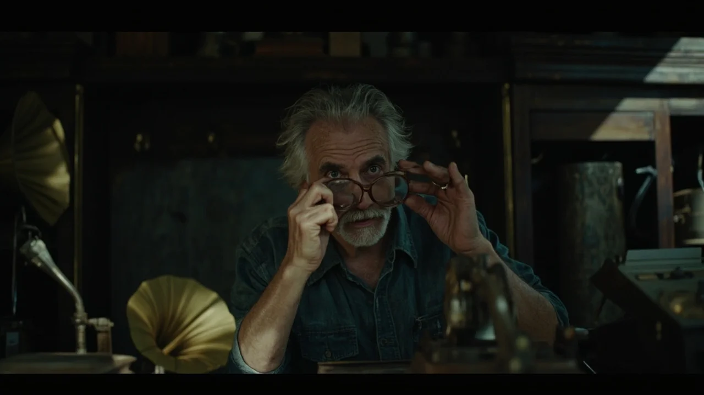
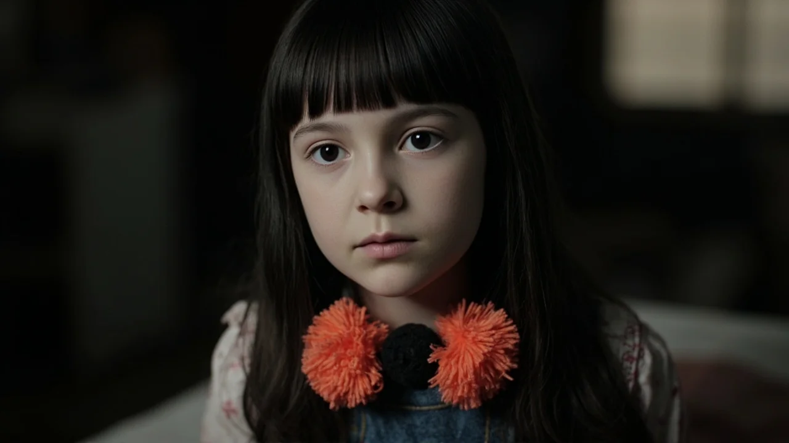
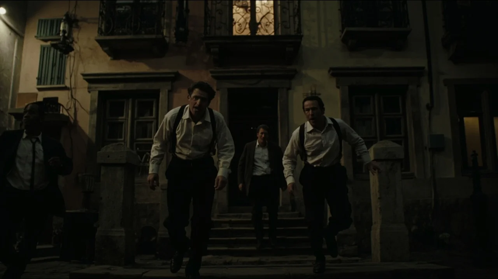
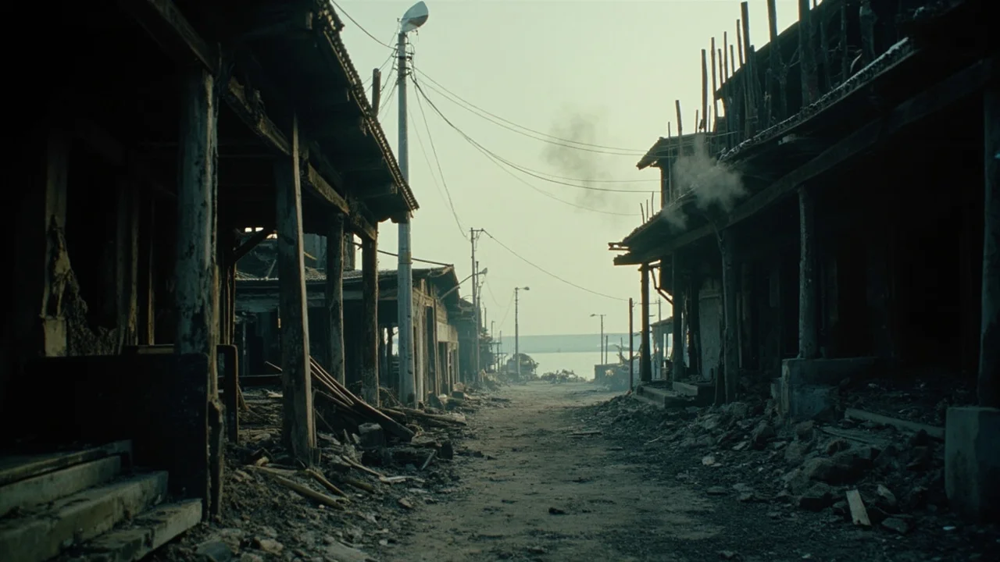
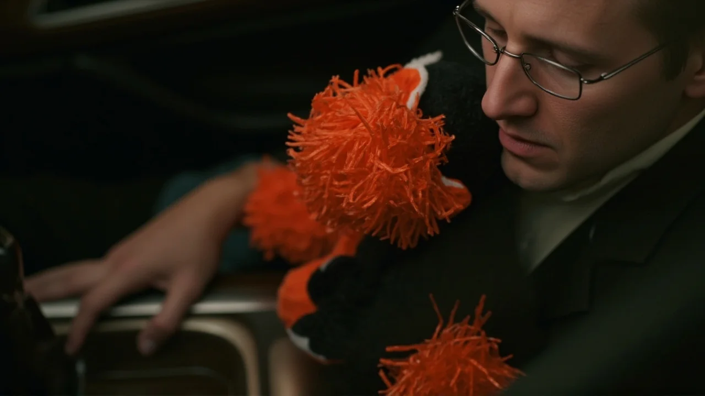

El viento de levante arrastraba olor a salmuera por el callejón del Puerto cuando Lucía empujó la cancela de la tienda de lance. Sonó una campanilla de latón sorda que apenas arrancó a Mateo de su modorra tras el mostrador. El viejo anticuario limpiaba las lentes de sus quevedos con la camisa, rodeado de fonógrafos desdentados y perchas de carcoma. Lucía no buscaba nada concreto. A sus doce años, las tardes de otoño en San Cristóbal se consumían esquivando el griterío de las tabernas y el serrín del taller de su padre.
Avanzó entre dos aparadores desvencijados hasta el rincón oscuro del fondo. Allí, sobre una banqueta baja de mimbre, reposaba el muñeco.
Era una figura insólita. Tenía la silueta de un mono de trapo hecho de paño negro apelmazado, áspero como fieltro viejo. Su cabeza redonda carecía de nariz o de boca; en su lugar, dos botones de cristal amarillo turbio hacían las veces de ojos, hundidos en las costuras con fijeza desasosegante. De los extremos de los brazos y de las patas no brotaban garras, sino cuatro pompones gruesos de lana naranja fosforescente, tiesos y compactos, de un brillo casi venenoso que no encajaba con el resto del cuerpo.
Lucía alargó los dedos. Mateo carraspeó desde el mostrador:
—Deja eso, niña. Lleva ahí metido desde antes de que nacieras. Ni los gatos se le arriman.
La advertencia llegó tarde. Las yemas de Lucía rozaron la lana naranja.
No hubo sobresalto visible, pero una vibración densa le sacudió el cráneo, similar a la que precede al desplome de una viga. Una frialdad de hierro le enfrió las encías. Lucía levantó el mono y lo apretó contra su pecho con ambos brazos. Pesaba como si estuviese relleno de limaduras de plomo.
Mateo frunció el ceño y salió de detrás del mostrador:
—He dicho que lo sueltes. Dame eso.
Al acercarse a menos de medio metro, el cuerpo del anciano se curvó hacia atrás como ante una descarga eléctrica. Sus ojos se desorbitaron, inyectados en sangre, y una baba espesa le manchó la barbilla. Sin un grito, con una mueca de júbilo atroz, tomó un abrecartas de latón mellado y se lo clavó con saña en la palma de su mano izquierda, atravesando la carne hasta raspar la madera. Mateo soltó una carcajada húmeda y siguió retorciendo el metal, ajeno al charco rojo que empapaba sus zapatillas.

Lucía no pestañeó. Dio media vuelta sujetando al mono contra el hombro y salió cerrando la puerta tras de sí.
La cuesta de los Pinos olía a leña húmeda. En la cocina baja de la carpintería, Tomás removía una cazuela de bacalao con el delantal de cuero atado a la cintura. Al oír los pasos de su hija sobre la tarima, se asomó al pasillo con la cuchara de palo.
—Llegas tarde, Lucía. Lávate las manos.
La niña no respondió. Avanzó con la vista en el suelo, encajando el mono negro bajo el mentón. Dos de los pompones anaranjados descansaban sobre la clavícula de su pichi vaquero, vibrando con un zumbido sordo.
Tomás frunció el entrecejo:
—¿Qué es esa porquería? ¿De dónde has sacado eso?
Dio dos zancadas para apartárselo de la cara. Apenas redujo la distancia a dos pasos, una punzada insoportable le reventó los parietales. A Tomás se le doblaron las rodillas. La cuchara cayó al suelo. Un bramido ensordecedor le anuló la razón; en su cabeza solo quedó una urgencia salvaje por destruir.
Sus dedos buscaron en el mandil hasta empuñar un formón de punta oblicua. Con una fascinación enajenada, Tomás se abalanzó contra la mesa, acuchillando el pino con golpes frenéticos que hacían saltar astillas afiladas. Luego la emprendió contra el aparador, quebrando los vasos contra la losa y clavándose los casquillos en los nudillos sin sentir dolor.
Lucía permaneció en el umbral con las zapatillas amarillas juntas. Sus ojos oscuros brillaban con una calma mineral. Cuando Tomás se desplomó de rodillas, balbuceando con el pecho desgarrado por su propia herramienta, la niña se inclinó a su lado.

El mono reposaba sobre su antebrazo. Con un movimiento seco y preciso, impropio de sus doce años, Lucía tomó la maza de encajar espigas del banco de trabajo y descargó el golpe sobre la nuca de su padre.
No hubo furia en su gesto. Solo una tarea que debía quedar concluida.
La noche cayó sobre San Cristóbal envuelta en niebla marina. A las diez, las farolas proyectaban manchas amarillentas sobre los adoquines. Lucía bajó a la plaza Mayor con el mono apretado al pecho; los pompones naranjas destacaban con una fosforescencia ácida en la bruma.
Don Carmelo, el boticario, echaba el cerrojo a la verja de su farmacia. Al divisar a la pequeña en mitad del empedrado, con la falda tiznada y un muñeco harapiento, se adelantó alarmado:
—¿Lucía? ¿Qué haces aquí a estas horas? Tu padre debe de estar…
El boticario cruzó el umbral de los dos metros y sus facciones se distorsionaron en un espasmo violento. La mandíbula se le desencajó hacia un lado y las manos se le curvaron como zarpas. Giró en redondo hacia dos marineros que subían del muelle cargando un bichero de hierro y una estacha.
—¡Malditos seáis! —rugió don Carmelo con una voz desconocida.
Se arrojó sobre el primer marinero, clavándole los pulgares en los ojos. El hombre cayó aullando mientras su compañero alzaba el bichero para apartar al anciano; pero bastó que el segundo pescador diese un paso hacia adelante y rozase el radio del muñeco para que el veneno psíquico le quemase las sienes. El marinero detuvo el golpe, miró a su camarada con una sonrisa desquiciada y le hundió el arpón en el vientre una y otra vez contra los adoquines.
El estrépito despertó a los vecinos. Asomaron linternas y voces en los balcones. Tres hombres bajaron a la carrera para separar la reyerta; en cuanto pusieron el pie en la calzada y rozaron el círculo maldito, la infección homicida los devoró por dentro. Vecinos de toda la vida comenzaron a estrangularse con las manos desnudas, a estrellarse la cabeza contra los bordillos y a acuchillarse con navajas de faena.

Lucía contemplaba la matanza sin pestañear, acariciando la felpa negra del mono, cuyo lomo latía tibio bajo sus dedos.
Al mediodía del segundo día, San Cristóbal era una trampa sellada. El transformador eléctrico ardía saboteado a golpes y los postes de teléfono colgaban tronchados sobre las huertas. El aire apestaba a pólvora y a hierro quemado.
En el cuartelillo municipal, el sargento Paredes y el cabo Varela permanecían atrincherados tras archivadores de chapa, creyendo que una epidemia de rabia había enloquecido al pueblo. Por las rendijas se divisaban decenas de cuerpos inmóviles esparcidos por la plaza.
El silencio que siguió a los últimos disparos fue aterrador. Entonces la vieron llegar.
Lucía avanzaba sola por el centro de la calzada. Sujetaba al mono negro bajo el brazo izquierdo; en la mano diestra arrastraba un hacha pesada de carnicero que dejaba un surco sobre el polvo.
—Es la hija de Tomás —susurró Varela con la pistola temblándole entre los dedos—. Sargento, viene hacia aquí.
—¡Quieta, niña! —gritó Paredes desde la aspillera—. ¡Suelta esa hacha!
Lucía no aminoró el paso. Se detuvo a tres palmos de la cancela enrejada. Alzó unos ojos vacíos que no reflejaban la luz.
Paredes dio un paso al frente para descorrer el cerrojo. Al rozar el hierro, a menos de un metro del mono de pompones naranjas, su semblante se descompuso. Las venas de su cuello se hincharon y una carcajada seca le brotó de la garganta. Miró de reojo a su subordinado, que retrocedía horrorizado mientras la náusea psíquica se colaba en la estancia. Varela se llevó las manos a las sienes, aullando mientras sangraba por la nariz.

Paredes, con frialdad mecánica, se metió el cañón de su arma entre los dientes y disparó sin vacilar. La detonación retumbó contra las paredes.
Lucía empujó la cancela, sorteó el cuerpo del sargento y se dirigió hacia el cabo, que se retorcía en el suelo arañándose las mejillas. Alzó el hacha por encima de su hombro y descargó el filo con precisión matemática.
La noche del tercer día fue la noche del fuego. Las llamas prendidas en la lonja saltaron a los tejados de madera. Durante horas, San Cristóbal ardió contra el mar oscuro como una inmensa pira. No hubo sirenas ni socorro; quienes no murieron a manos de sus vecinos perecieron bajo las vigas ardiendo de sus casas.
Al despuntar el cuarto día, el viento del norte barrió las cenizas hacia la ría. La villa había quedado reducida a un esqueleto calcinado. En las calles que bajaban al muelle no quedaba un solo habitante con vida. No ladraban perros ni graznaban gaviotas; reinaba un silencio espeso, roto únicamente por el crepitar de algún madero humeante.
Lucía dejó atrás las ruinas en dirección a la carretera comarcal cuatrocientos doce. Su pichi vaquero estaba manchado de hollín y sangre reseca; sus zapatillas arrastraban barro salobre. En su pecho, el mono de trapo negro lucía intacto, con sus pompones anaranjados limpios y esponjosos.
Llegó al arcén de grava junto al mojón de piedra que marcaba el límite del municipio. Se sentó sobre el montículo de tierra, encogió las piernas contra el pecho y escondió la frente entre las rodillas. Con los nudillos se frotó los párpados hasta enrojecerlos, simulando un llanto desconsolado.
Aguardó paciente el rumor del primer motor.
Daniel conducía su furgoneta familiar gris a velocidad moderada. Regresaba de unas vacaciones solitarias por la costa cantábrica, buscando atajos comarcales antes de enlazar con la autovía hacia Madrid. Desde lo alto del puerto había visto una humareda densa cubriendo la ensenada, creyendo que se trataba de un fuego de rastrojos.

Al doblar la curva y contemplar el pueblo en ruinas, se le heló la sangre. San Cristóbal era un cementerio de cenizas humeantes. No había bomberos ni patrullas.
—Pero ¿qué ha pasado ahí abajo? —murmuró, aferrándose al volante.
Entonces sus faros iluminaron la cuneta. Una niña menuda estaba sentada entre la gravilla, temblando mientras sollozaba con la cara entre las rodillas. Entre sus brazos apretaba un muñeco de trapo negro con llamativos pompones anaranjados.
Daniel frenó en seco sobre el arcén. Bajó la ventanilla del copiloto con el rostro demudado por la compasión:
—¡Cielo santo! ¡Pequeña! ¿Estás herida?
Lucía alzó la cabeza despacio. Tenía las mejillas surcadas por lágrimas sucias y los labios le temblaban con desamparo:
—No queda nadie… —susurró con voz rota—. Se han quemado todos…
Daniel abrió de golpe la puerta del acompañante:
—Sube, deprisa. Estás a salvo. Te sacaré de aquí y te llevaré a un hospital en la capital.
Lucía se incorporó con fingida pesadez. Subió de un salto al asiento del copiloto, acomodó el mono de trapo sobre su regazo sujetándolo con ambas manos y cerró la puerta con un chasquido firme.
Daniel metió primera y aceleró a fondo, alejándose de las ruinas para enfilar la carretera hacia la autovía.
—Tranquila, ya pasó todo —dijo, mirando por el retrovisor exterior el humo que quedaba atrás—. Vas a estar bien, te lo prometo.
En el asiento del copiloto, Lucía alzó los ojos hacia el espejo interior. Su mirada no albergaba miedo ni inocencia; sus labios dibujaban una sonrisa gélida, desprovista de alma.
Y sobre la consola central, a escasos dos centímetros de la mano con la que Daniel sostenía la palanca de cambios, los pompones anaranjados de las patas del mono reposaban tibios y mullidos, aguardando el momento de empezar otra vez.